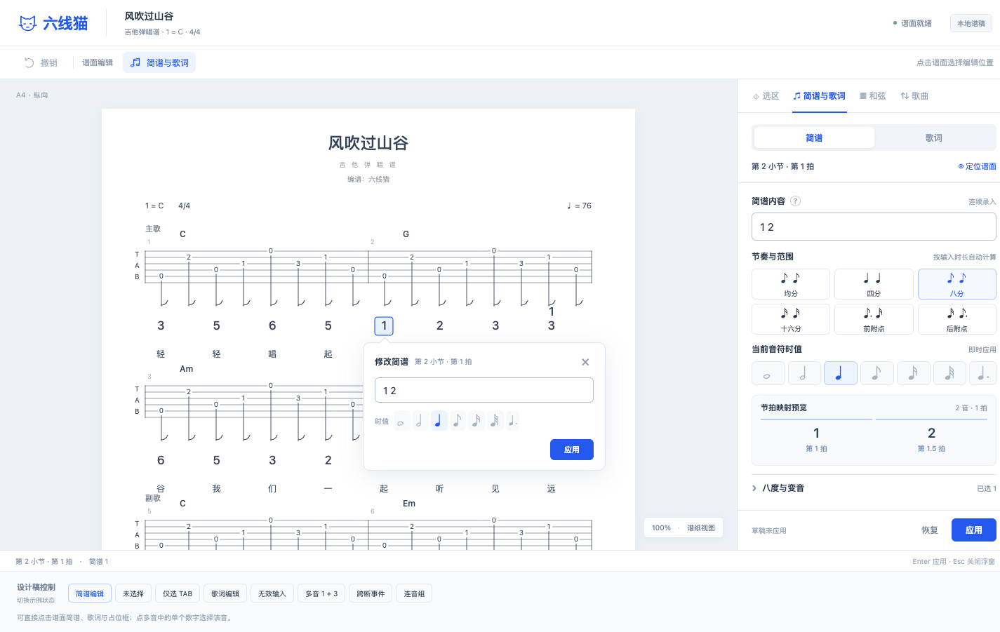
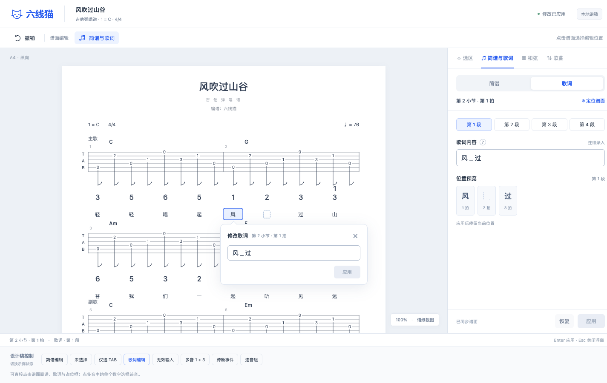
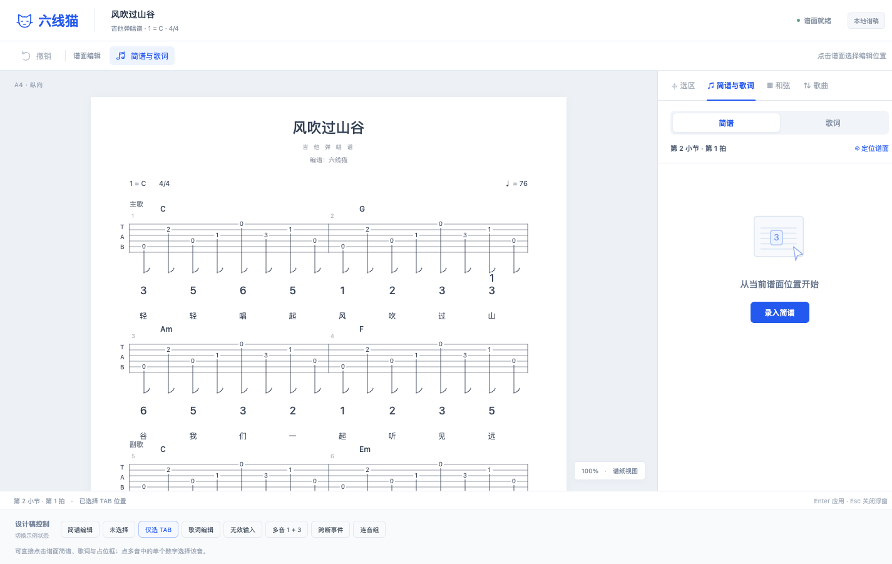
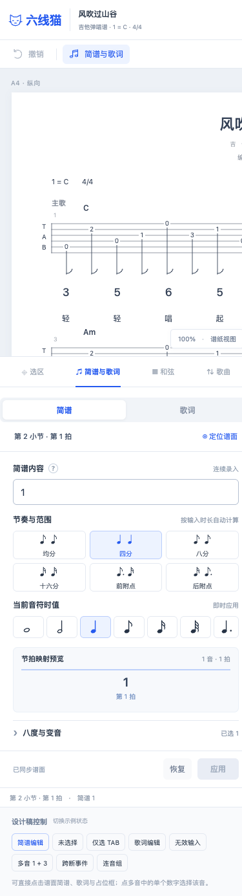

歌词与简谱
REQ-007～016 · 侧栏与谱面气泡设计
01 · 简谱编辑
连续录入、节奏符号与映射预览

02 · 连续歌词
侧栏与气泡同步，空位置显示占位框

03 · 未选择状态
保留清楚的起点，减少长说明

04 · 窄屏布局
390px，谱面内部滚动，侧栏下移

REQ-007～016 · 侧栏与谱面气泡设计
连续录入、节奏符号与映射预览

侧栏与气泡同步，空位置显示占位框

保留清楚的起点，减少长说明

390px，谱面内部滚动，侧栏下移
